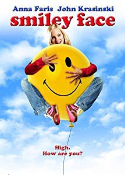

IMDB-Wertung: 5.8 / 10
IMDB-Wertung: 5.8 / 10  Metascore:
Metascore: 
After a young actress unknowingly eats her roommate's marijuana cupcakes, her day becomes a series of misadventures.
Alternativ: Smiley Face
 IMDB-Wertung: 5.8 / 10 Metascore:
After a young actress unknowingly eats her roommate's marijuana cupcakes, her day becomes a series of misadventures.
Jahr: 2007
Dauer: 84 Minuten
FSK: 12
Land: USA Studio: First Look InternationalTonspuren: DTS - ,
Untertitel: Deutsch,
Auflösung: 1080p (1920x1080) Größe: 8744 MB
Genre: Komödie
Regisseur: Gregg Araki
Drehbuch: Anthony Tambakis
Soundtrack: David Kitay
Darsteller:
 Anna Faris als Jane F.
Anna Faris als Jane F. Roscoe Lee Browne als Himself
Roscoe Lee Browne als Himself Danny Masterson als Steve the Roomate
Danny Masterson als Steve the Roomate Ben Falcone als Agent
Ben Falcone als Agent Adam Brody als Steve the Dealer
Adam Brody als Steve the Dealer Brian Posehn als Bus Driver
Brian Posehn als Bus Driver Rick Hoffman als Angry Face
Rick Hoffman als Angry Face Joey Diaz als Security Guard
Joey Diaz als Security Guard Jim Rash als Casting Assistant
Jim Rash als Casting Assistant Jayma Mays als Actress in Waiting Room
Jayma Mays als Actress in Waiting Room Jane Lynch als Casting Director
Jane Lynch als Casting Director John Krasinski als Brevin
John Krasinski als Brevin Michael Shamus Wiles als Officer Jones
Michael Shamus Wiles als Officer Jones Marion Ross als Shirley
Marion Ross als Shirley Michael Hitchcock als Laundry Room Man
Michael Hitchcock als Laundry Room Man John Cho als Mikey
John Cho als Mikey Danny Trejo als Albert
Danny Trejo als Albert Richard Riehle als Mr. Spencer
Richard Riehle als Mr. Spencer Chad Mountain als Marijuana Jesus
Chad Mountain als Marijuana Jesus Dave Allen als Hippie #1
Dave Allen als Hippie #1 William Zabka als Prison Guard
William Zabka als Prison GuardDatei: X:\2007(N-Z)\Smiley Face - Was für ein Trip...! (2007, FSK12, 1920x1080).mkv seit 19.07.2018
Festplatte: HD 2007(A-Z)-2008(A-F)
 Es gibt insgesamt 56 Filme in der Gruppe '2007(N-Z)'
Es gibt insgesamt 56 Filme in der Gruppe '2007(N-Z)'